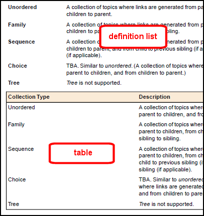

Definition lists should be used for structuring terms and their
corresponding definitions, rather than an alternative table structure.
Some information structures, particularly terms with corresponding
definitions, can be marked up as either definition lists or tables.
If the content is indeed made up of terms and
definitions, the definition list (dl) structure should be used.
For content not so clearly identifiable as terms and definitions, but where
there is a two part structure made up of short phrase and a longer explanation
of the phrase, the simpler definition list structure should always be preferred
over the table structure.
Definition lists are particularly suited to defining or explaining
components or items.
The difference between tables and definition lists

Definition lists are rendered with fewer potential complications than
tables, and are semantically stronger than the more generic table structure.